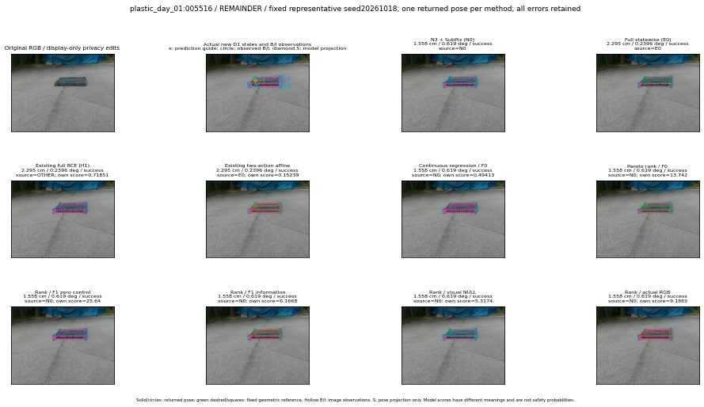

실선은 반환 자세, 초록 점선은 고정 기하 참조입니다. S는 영상 관측이 아닙니다. 점수는 모델별 의미가 다르며 보정된 안전 확률이 아닙니다. 개인정보 처리는 표시 사본에만 적용했습니다.
| 방법·seed | 위치 / 회전 / 공동성공 | 실제 출처 | 선택 후보 | 각 모델 자체 점수 |
|---|---|---|---|---|
| N0 | 1.558 cm / 0.619 deg / success | N0 | N/A | N/A |
| E0 | 2.295 cm / 0.2396 deg / success | E0 | N/A | N/A |
| E0_REGENERATED | 2.295 cm / 0.2396 deg / success | E0 | E0_REGENERATED | N/A |
| POSEFIX_SUBPIX_PF_ANCHOR | 1.95 cm / 0.7892 deg / success | OTHER | N/A | N/A |
| POSEFIX_SUBPIX_YOLO_ANCHOR | 1.95 cm / 0.7892 deg / success | OTHER | N/A | N/A |
| D1_H1_MLP_s20261018 | 2.295 cm / 0.2396 deg / success | OTHER | G13/ORIGINAL_WD/endpoint/37 | 0.7185055017471313 |
| D1_H1_MLP_s20261019 | 2.295 cm / 0.2396 deg / success | OTHER | G13/ORIGINAL_WD/endpoint/37 | 0.5195478796958923 |
| D1_H1_MLP_s20261020 | 2.295 cm / 0.2396 deg / success | OTHER | G13/ORIGINAL_WD/endpoint/37 | -0.030696183443069458 |
| D1_H1_PAIR_MLP_s20261018 | 1.558 cm / 0.619 deg / success | N0 | N0 | -0.6115550994873047 |
| D1_H1_PAIR_MLP_s20261019 | 1.558 cm / 0.619 deg / success | N0 | N0 | -0.25108465552330017 |
| D1_H1_PAIR_MLP_s20261020 | 1.558 cm / 0.619 deg / success | N0 | N0 | 0.2875923812389374 |
| D1_H1_PAIR_ROLE_AFFINE_s20261018 | 2.295 cm / 0.2396 deg / success | E0 | E0_REGENERATED | 0.15238869190216064 |
| D1_H1_PAIR_ROLE_AFFINE_s20261019 | 2.295 cm / 0.2396 deg / success | E0 | E0_REGENERATED | 0.1687314212322235 |
| D1_H1_PAIR_ROLE_AFFINE_s20261020 | 2.295 cm / 0.2396 deg / success | E0 | E0_REGENERATED | 0.21081537008285522 |
| R_CONT_F0_s20261018 | 1.558 cm / 0.619 deg / success | N0 | N0 | 0.4941321909427643 |
| R_CONT_F0_s20261019 | 1.558 cm / 0.619 deg / success | N0 | N0 | 0.5599051713943481 |
| R_CONT_F0_s20261020 | 2.295 cm / 0.2396 deg / success | OTHER | G13/ORIGINAL_WD/endpoint/37 | 0.5663321614265442 |
| R_ORDER_F0_s20261018 | 1.558 cm / 0.619 deg / success | N0 | N0 | 13.742110252380371 |
| R_ORDER_F0_s20261019 | 1.558 cm / 0.619 deg / success | N0 | N0 | 7.489259243011475 |
| R_ORDER_F0_s20261020 | 1.558 cm / 0.619 deg / success | N0 | N0 | -2.5689334869384766 |
| R_ORDER_F1_ZERO_s20261018 | 1.558 cm / 0.619 deg / success | N0 | N0 | 25.639842987060547 |
| R_ORDER_F1_ZERO_s20261019 | 2.295 cm / 0.2396 deg / success | OTHER | G13/ORIGINAL_WD/endpoint/37 | 16.469810485839844 |
| R_ORDER_F1_ZERO_s20261020 | 1.558 cm / 0.619 deg / success | N0 | N0 | 13.917903900146484 |
| R_ORDER_F1_s20261018 | 1.558 cm / 0.619 deg / success | N0 | N0 | 6.166769504547119 |
| R_ORDER_F1_s20261019 | 1.558 cm / 0.619 deg / success | N0 | N0 | 8.714134216308594 |
| R_ORDER_F1_s20261020 | 1.558 cm / 0.619 deg / success | N0 | N0 | 3.9304962158203125 |
| V_ORDER_NULL_s20261018 | 1.558 cm / 0.619 deg / success | N0 | N0 | 5.317415237426758 |
| V_ORDER_NULL_s20261019 | 1.558 cm / 0.619 deg / success | N0 | N0 | 3.7731857299804688 |
| V_ORDER_NULL_s20261020 | 1.344 cm / 0.3568 deg / success | OTHER | G10/ORIGINAL_WD/selected | 5.6135430335998535 |
| V_ORDER_RGB_s20261018 | 1.558 cm / 0.619 deg / success | N0 | N0 | 9.188325881958008 |
| V_ORDER_RGB_s20261019 | 1.558 cm / 0.619 deg / success | N0 | N0 | 3.8890907764434814 |
| V_ORDER_RGB_s20261020 | 1.558 cm / 0.619 deg / success | N0 | N0 | -3.2247159481048584 |